SQ01
00:00–00:08
HYPEA ON
INKCAMRemotion
黑场。音乐开头三下打击，每一下砸一个全屏大字（Big Shoulders）：WHICH / MOLECULE / FIRST?；第三下后 A 的纸片从左上角甩进来长到半屏，A 说开场问题；"worth making?" 下面一笔米白墨线画出来。
按脚本 v3 的 85 个台词节拍排的分镜。黑底；人和身体用手绘墨线，AI 用电青点云，血液用 TouchDesigner 黑白舞台视效；每个组员有一个固定的角。每个镜头都写了画面、工具、证据标签和素材状态。
人、身体、生物学、讲解：米白墨线，一拍二，标注每 3 帧抖动；朱红只给病灶、血、靶点。Remotion（rough.js / perfect-freehand）+ Blender Line Art。
AI 和计算：电青点云、网格、等宽字，一拍一，不抖。TouchDesigner / three.js。
血液和循环：纯黑白粒子血管流动，像 LED 大屏，只在鼓点上闪一下朱红。TouchDesigner。
真实结构：BodyParts3D 真实肝脏、AlphaFold CDK20、RDKit 从真实 SMILES 生成的 001/048、PDB 实验结构。
口播纸片。
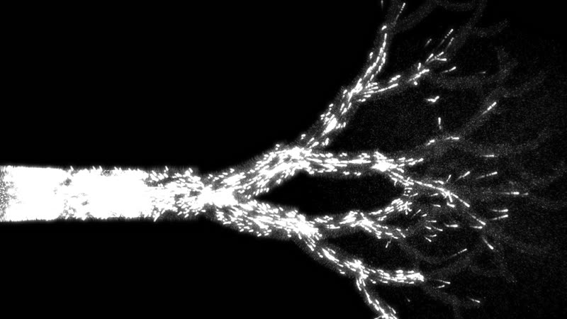
styleframes/td_bw/td_vessels_bw_10s.mp4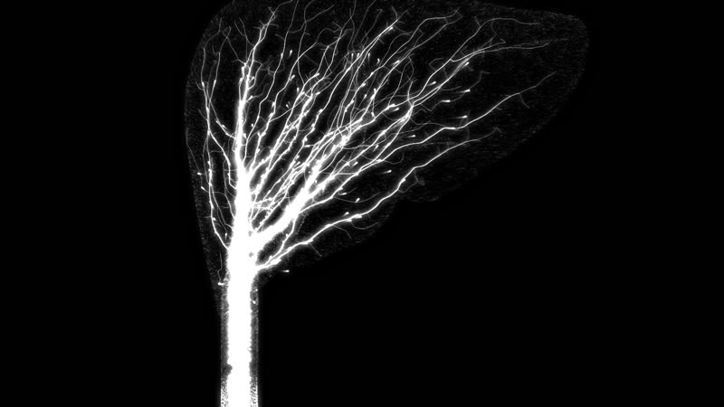
styleframes/td_bw/td_liver_tree_bw_10s.mp4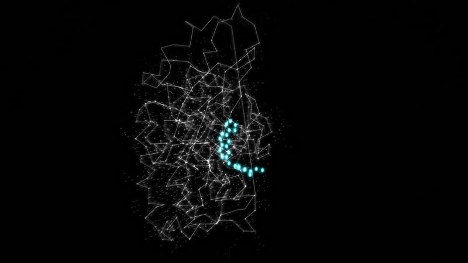
styleframes/td_bw/td_alphafold_cdk20_10s.mp4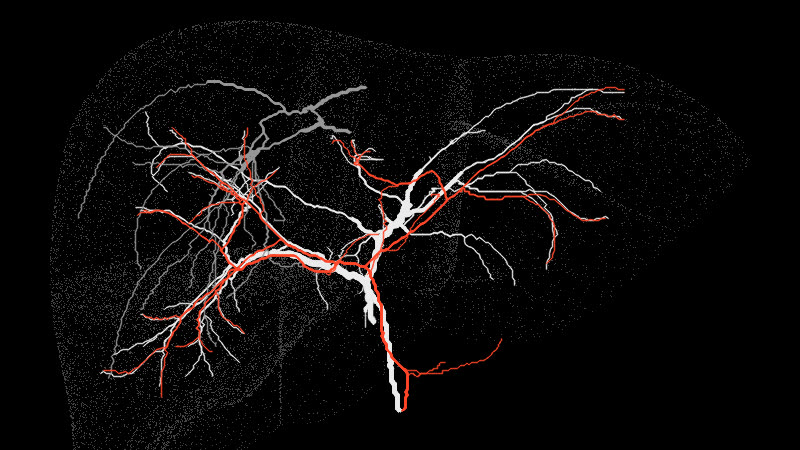
assets/vessel_paths/real_paths.npy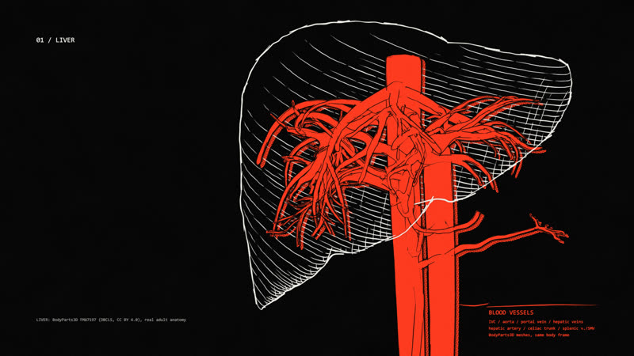
styleframes/blender_lineart/bl_liver_ink.png（另有 4 秒转动 bl_liver_turn.mp4）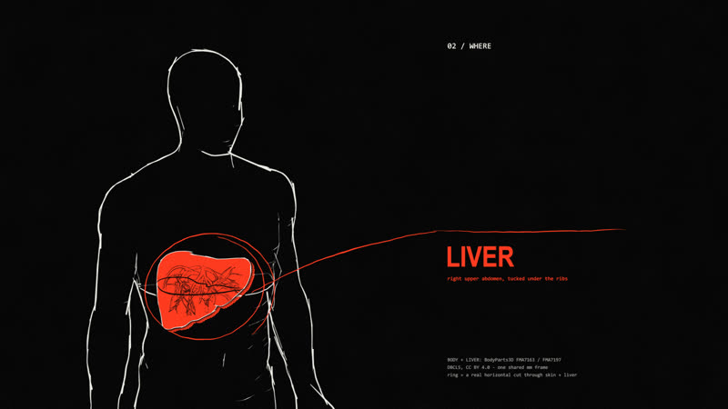
styleframes/blender_lineart/bl_body_ink.png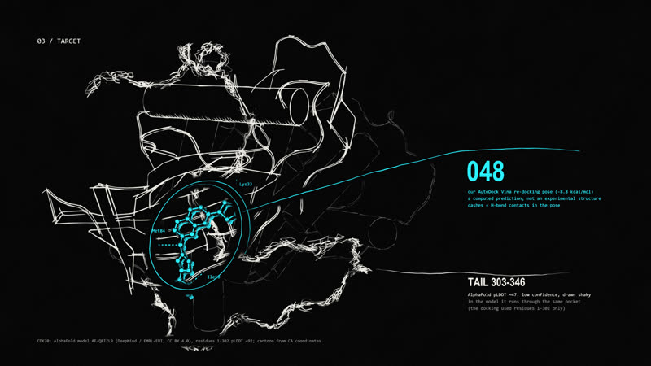
styleframes/blender_lineart/bl_protein_ink.png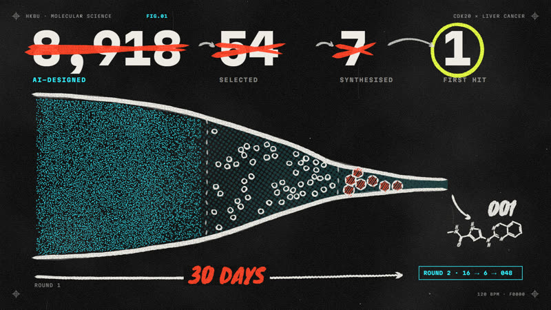
styleframes/remotion_handdrawn/V3-Funnel.png（动画 V3-Demo.mp4）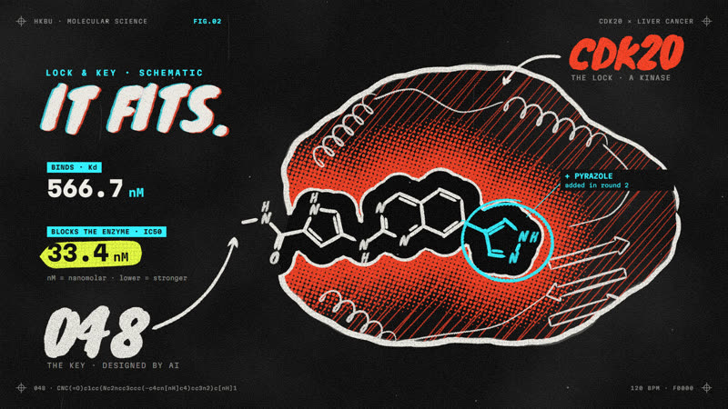
styleframes/remotion_handdrawn/V3-LockKey.png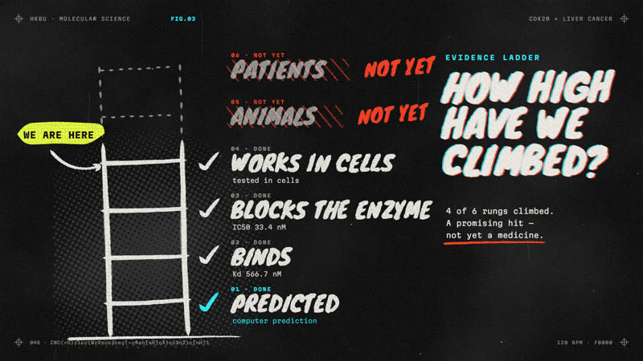
styleframes/remotion_handdrawn/V3-Ladder.png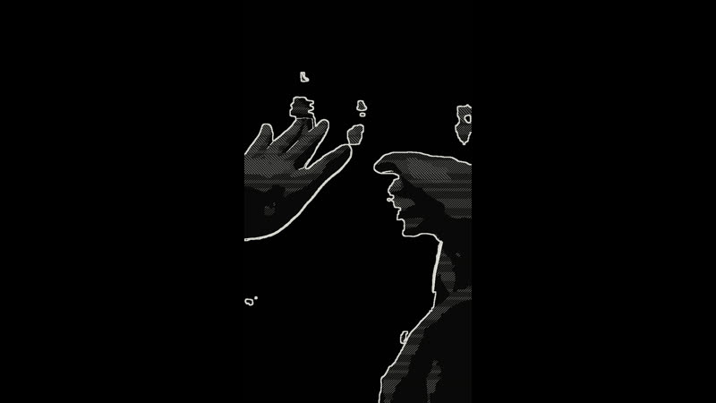
styleframes/footage_ink/footage_ink_compare_3s.mp4黑场。音乐开头三下打击，每一下砸一个全屏大字（Big Shoulders）：WHICH / MOLECULE / FIRST?；第三下后 A 的纸片从左上角甩进来长到半屏，A 说开场问题；"worth making?" 下面一笔米白墨线画出来。
一条长长的手绘笔画横穿黑底，是一款药的时间线；一股细细的 TD 血流沿笔画往前流、不断卡住。D、B、C 依次在自己的角点亮成半屏纸片，旁边手写对应数字：10–17 yrs（D 右下）、~US$2.8 billion（B 右上）、十个墨点灭掉九个（C 左下）。四个角第一次全亮。
全屏黑白血管树：一根主干分出几千条毛细血管（= 可以做的分子）；鼓点上整棵树脉动；最后只有一条分支被电青点亮——"先做哪一个"。
血流线收拢成真实 AlphaFold CDK20 的原子点云（2735 个原子，亮度 = AlphaFold 置信度）；一圈手绘奖章轮廓（不用照片）；字幕 Nobel Prize in Chemistry 2024。
几笔画出香港海岸线；一条血管线从沙田流到白石角（CUHK → 科学园）。音乐落拍，进 2.35:1 遮幅，标题卡 WORTH TESTING? 一拍二砸进来，下面是组号和四人名字（四个角各一个）。
真实肝脏（BodyParts3D v4）米白线稿慢转 → 镜头推进，白色血流沿真实门静脉的中心线一级级分进肝里，肝动脉是唯一的朱红、随底鼓亮，肝静脉是灰色、血往外流。右侧数据卡：6th most common / 3rd in cancer deaths。接着肝细胞画成蜂窝，一个墨环填到 3/4：HCC ~75%。
手绘香港地图：沙田一个通用医院轮廓（无 logo）和一排样本管；"CCRK = CDK20" 等宽字；镜头滑到白石角科学园几笔天际线，论文作者单位那一行原样打字出来。
A 的纸片半屏（左），研究问题在右半边逐字打出（Inter Tight），关键词 find / assess 手绘圈出；case study 条带；切到 C 的纸片（左下长大），旁边手写 1 和 2。
两个目标用干净字体写出，然后缩成角标（之后第 4、5、8 节回来）；主论文首页轮廓（标题可读）盖章 original research；六张来源卡从主论文扇形展开，每张标类型；两个手绘放大镜扫过，打勾。
Conflicts of interest 标题原样打字，加一个中性的墨线括号；然后一根主血管分成五条带标签的分支：Target / Methods / Results / Benefits & limits / Answer——这张路线图之后在每节开头以角标形式回来。
D 半屏，墙上旁边自己画出一个墨线钥匙孔；细胞轮廓推进到一个墨线蛋白团和口袋，钥匙状小分子滑进去（标示意）；LOCK → target、KEY → candidate；第二把不同的锁拒绝这把钥匙 → selectivity。可选：插 2 秒真实实验结构 PDB 5L2I（CDK6 + 已上市药 palbociclib）当"真的锁和钥匙长这样"。
真实 AlphaFold CDK20 线稿缎带慢转，ATP 口袋被一圈手绘朱红墨线圈出。
52 道手绘计数线，36 道涂成朱红（69%）；箭头指向 later stage / shorter survival；细胞在 CDK20 变暗后分裂变慢（示意，不画假曲线）。D 半屏：a link is not proof。
十股电青数据流像血管一样汇进一条通道（10 data sets / 1,133 tumour / 674 healthy）；手写 20 行名单，钢笔圈出 CDK20，旁边三个勾。B 半屏问"没有锁的照片怎么配钥匙"，问完画面只剩一个空的墨线相框。
角标 Objective 1 / Tool 1。一格格蛋白轮廓大多是空白（没被测过）；一串墨点珠子（一个残基一颗）折叠成真实 CDK20——过程中从墨线变成电青点云，亮度按 AlphaFold 置信度（pLDDT）。第一个 INK × SIGNAL 对撞时刻。
低置信度尾巴（303–346）在口袋里乱跳（越不确定跳得越凶），Arg305 标出来；B 半屏 + 一把手绘剪刀从画框边剪过；尾巴散成粒子像血一样流走，打开的口袋描一圈墨线。
角标 Tool 2。一抽屉旧钥匙（墨线）关上；几十条电青流线并排，每条在末端用墨线画出一个分子骨架；口袋做成墨线网格，Met84 插一根墨线图钉 must bind here；一个手绘筛子：带危险基团的骨架被划掉，小标签 drug-like? easy to make?
第 4 节高潮。8,918 个电青点组成一面墙（98×91），对接打分像一道波扫过，点亮一部分；A 半屏：a docking score is a clue, not proof；点云聚类，54 个往前飘，7 个被重墨线描出来；计数卡 8,918 → 54 → 7 在卡上跳。点按鼓点各自运动（v2 已验证的打点系统）。
总结卡：四个墨线图标（数据流 / 折叠缎带 / 刻钥匙 / 钥匙入锁）；第二行灰掉：molecular dynamics / quantum mechanics (not reported here)。
角标 Objective 2 / Results。七个分子骨架一排（结构从 Ren 2023 图 5 转录成 SMILES，RDKit 重画；另外六个 Kd > 30 µM）；墨线量表 Kd: lower = tighter。C 半屏：One of the seven stood out. 001 的 3D 结构（RDKit 从真实 SMILES 生成）落进口袋；酸黄实测章 Kd = 9.2 ± 0.5 µM；手绘日历 30 days。
一把很长的尺子 10–17 years，起点一个极细的电青括号 30 days = first binding hit；钥匙在锁里想转、墨线发抖、转不动；酸黄章 Enzyme IC50 > 6 µM；C 半屏：The key went into the lock. But it barely turned.
第 5 节高潮。一个闭环血管把实验数据从实验室图标送回设计节点（循环）；Round 2: 16 → 6；001 变形成 048：多出来的吡唑环用电青一笔画出来，和 Lys33 的氢键画成墨线虚线；酸黄章 Kd 566.7 ± 256.2 nM、IC50 33.4 ± 22.6 nM；钥匙转动，锁亮；C 半屏：This time, the key turned.
两个培养皿的手绘细胞（标示意）：Huh7 更早变稀；条形图 208.7 vs 1,706.7 nM，脚注 ~8× = our calculation；箭头指向 CDK20 only? / other proteins?
证据阶梯从下往上画：1–4 级依次填上小图标（缎带 / 钥匙入锁 / 钥匙转动 / 细胞），5–6 级是虚线 not reported。D 全屏：So 048 is a drug candidate. It is not a medicine.
四格：Health / Economic / Ethical / Environmental，每格分 shown | possible, not measured；shown 一栏打墨勾；048 和以前报道过的 CDK20 抑制剂并排（Ren Fig. 2，标注）；possible 一栏全是虚线；一条电力线流进服务器图标。
之前的尾巴和对接姿态改画成虚线 + predicted 章；一条只有一个选手的跑道，"8,918 / 7" 写上再划掉；B 半屏：cells in a dish are not people；人形轮廓，器官空白带问号 ADME? / selectivity? / toxicity?；Bender 2026 摘要一句话转述 + (abstract only)。
A 半屏，手写 1–3。① 同一起跑线两条跑道，秒表、硬币、叉号分别累计；② 培养皿网格不断复制，其中一个皿里 CDK20 缎带淡掉（敲除实验）；③ 预测缎带叠一个空的虚线幽灵 measured structure?；TD 闭环把暗掉的 failed 粒子送回设计节点。
C 半屏：So, back to our question. 五条分支的路线图回来，四个工具图标依次亮，Objective 1 角标打勾 (for this case)；一笔不断的墨线：8,918 → 54 → 7 → 001 → 048，阶梯停在第 4 级；Objective 2：勾 + partly。
接力：C（左下）→ B（右上，旁边一个无品牌的手绘手机轮廓）→ D（右下，墨线阶梯压在画框边）→ A（左上）。最后一句时四张纸片同时滑向中间拼成 2×2。
参考文献（ACS）、数据和图片署名（AlphaFold DB、BodyParts3D、PDB）、音乐署名、生成式 AI 使用声明。
| # | 段落 | 时间 | 首选 | 为什么 |
|---|---|---|---|---|
| 1 | 开场 | S1 · 00:00–01:20 | NewJeans – Supernatural (Instrumental) | 开头 4 小节 ≈ 8.7 秒，正好对上 SQ01 三下打击 |
| 2 | 身体 / 肝 | S2 · 01:20–04:25 | Max Cooper – Order From Chaos | 节奏由雨声采样做成，留给人声的空间多 |
| 3 | 锁和钥匙 | S3 · 04:27–06:38 | Arca – Thievery | 稀疏、怪、硬的鼓 |
| 4 | AlphaFold 揭示 | S4 · 06:38–07:49 | Jon Hopkins – Emerald Rush | 底鼓进来的点对上蛋白折叠完成（待听确认） |
| 5 | 8,918 → 54 → 7 | S4 · 07:49–09:40 | Ryoji Ikeda – data.microhelix（+ Holly Herndon & Jlin – Godmother 做 8,918 那一下） | 数据音乐，配点云墙 |
| 6 | 001 → 048 | S5 · 09:42–11:41 | Supernatural 回扣 → 在 "barely turned" 磁带停 → The Weeknd – Dancing in the Flames (Instrumental) | 第二轮赢的那一刻进副歌 |
| 7 | 细胞 + 还不是药 | S5–S6 · 11:41–14:57 | Kelly Lee Owens – Melt! → Oneohtrix Point Never – A Barely Lit Path | 说到 "not a medicine" 时音乐全部切掉 |
| 8 | 展望、结论、片尾 | S7–END · 14:59–17:33 | Nils Frahm – Says → 收音机调频 → The Weeknd – Wake Me Up (feat. Justice) 器乐尾段 | 片尾 2×2 拼合落在最后一拍 |
| # | 时刻 | 位置 | 长度 | 音乐和画面 |
|---|---|---|---|---|
| W1 | 片名卡 | 约 01:16 | 约 18 秒 | Supernatural 前奏 8 小节；标题砸屏 + 四个角依次点亮 |
| W2 | AlphaFold 折叠 | 约 06:38（3-09 之后） | 约 25 秒 | Emerald Rush；墨点珠链折叠成真实 CDK20 点云，按置信度发光，尾巴乱跳 |
| W3 | 8,918 爆发 | 约 08:37（4-09 之前） | 约 15 秒 | Godmother 8 小节；点云墙按鼓点各自运动 |
| W4 | 钥匙转动 | 约 11:40（5-10 前后） | 约 8 秒 | Dancing in the Flames 副歌砸入；048 卡进口袋，锁亮 |
| W5 | 片尾 | 最后 | 约 33 秒 | Wake Me Up 器乐尾段；四张纸片拼成 2×2，参考文献滚动 |
版权：只在 Moodle 课程内提交，按香港版权条例教学用途的公平处理；每首片段尽量 30–45 秒以内，片尾列出曲目。公开发布要换成 CC 授权音乐的版本。